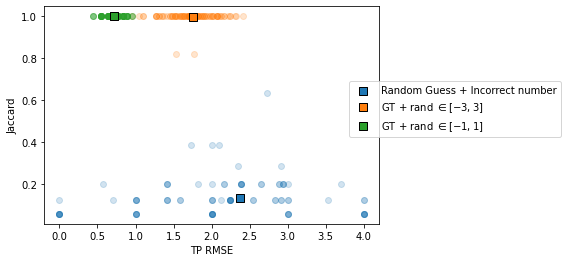

fig, axs = plt.subplots(10, 1, figsize = (20, 20))
window_size = 5
for ax in axs:
traj, labs = models_phenom()._multiple_state_traj(alphas = [0.7, 0.8], Ds = [0.01, 0.1])
filtered_d = label_filter(labs[:,1])
filtered_a = label_filter(labs[:,0])
ax.plot(labs[:, 1], 'o', label = 'True label')
ax.plot(filtered_d, label = r'$D$')
ax.plot(filtered_a, label = r'$\alpha$')
axs[0].set_title(f'Majority filter with window size = {window_size}')
axs[0].legend()
plt.setp(axs, xticklabels = []);utils_challenge
Filtering labels
Here we treat the labels extracted from models_phenom such as to have smoother ones. For instance, we will define a minimum segment length.
label_filter
label_filter (label, window_size=5, min_seg=3)
majority_filter
majority_filter (seq, width)
fig, axs = plt.subplots(10, 1, figsize = (20, 20))
filt_size = 5
M = [[0.8, 0.1, 0.1],[0.05, 0.9, 0.05], [0.05, 0.05, 0.9]]
alphas = [0.7, 1, 1.2]
Ds = [0, 1, 2]
for ax in axs:
traj, labs = models_phenom._multiple_state_traj(alphas = alphas, Ds = Ds, M = M)
filtered = label_filter(labs[:,1], window_size=filt_size)
ax.plot(labs[:, 1], 'o', label = 'True label')
ax.plot(filtered, 'o-', ms = 2, label = f'median filter with window size = {filt_size}', lw = 2)
axs[0].legend()
plt.setp(axs, xticklabels = []);Calculating new transition rates after filtering
T = 1000
traj, labs = models_phenom().multi_state(N = 500, alphas = [0.7, 1], Ds = [0, 1], T = T)NameError: name 'label' is not definedres_t = np.array([])
res_ft = np.array([])
for label in tqdm(labs.transpose(1,0,2)[:,:,0]):
# raw labels
CP = np.argwhere(label[1:] != label[:-1]).flatten()
if CP[-1] != 199: CP = np.append(CP, T-1)
CP = np.append(0, CP)
res_t = np.append(res_t, CP[1:] - CP[:-1])
# filtered labels
filt = label_filter(label)
CP_f = np.argwhere(filt[1:] != filt[:-1]).flatten()
if CP_f[-1] != 199: CP_f = np.append(CP_f, T-1)
CP_f = np.append(0, CP_f)
res_ft = np.append(res_ft, CP_f[1:] - CP_f[:-1])print(f' True transition rate: {1/np.mean(res_t)}\n',
f'Filtered transition rate: {1/np.mean(res_ft)}\n',
f'True rate x 2/3: {1/np.mean(res_t)*(2/3)}') True transition rate: 0.10091711711711712
Filtered transition rate: 0.06881721721721722
True rate x 2/3: 0.067278078078078081/0.100917117117117129.9091217482904531/0.0688172172172172214.5312472726638From step-wise labels to list of properties
stepwise_to_list
stepwise_to_list (labels)
traj, labs = models_phenom._multiple_state_traj(alphas = [0.7, 1], Ds = [0, 1])
filt_alpha = label_filter(labs[:,0])
filt_D = label_filter(labs[:,1])
CP, Ds, alphas = stepwise_to_list(np.vstack((filt_alpha, filt_D)).transpose())
fig, ax = plt.subplots(figsize = (20, 3))
ax.plot(filt_alpha, zorder = -1)
for idx, cp in enumerate(CP):
ax.axvline(cp, c = 'k', ls = '--', alpha = 0.8, zorder = -1)
plt.scatter(cp, alphas[idx+1], c = 'C1', zorder = 2)Continuous labels to list of features
The labels in the challenge will be the list of \(n\) changepoints as well as the \(n+1\) diffusion properties (\(D\) and \(\alpha\)) for each segment. This function transforms the stepwise labels into three lists: CPs, \(\alpha\)s and \(D\)s.
continuous_label_to_list
continuous_label_to_list
continuous_label_to_list (labs)
Given an array of T x 2 labels containing the anomalous exponent and diffusion coefficient at each timestep, returns 3 arrays, each containing the changepoints, exponents and coefficient, respectively. If labs is size T x 3, then we consider that diffusive states are given and also return those.
T = 50
trajs, labels = models_phenom().multi_state(N = 1, T = T)
CP, alphas, Ds, _ = continuous_label_to_list(labels[:,-1,:])
plt.plot(labels[:, -1, 1], 'o', alpha = 0.4, label = 'Continuous label')
plt.scatter(CP-1, Ds, c = 'C1', label = 'CP-1 and value of previous segment')
plt.legend(); plt.xlabel('T'); plt.ylabel(r'$\alpha$')Text(0, 0.5, '$\\alpha$')List of features to continuous labels
This function does the opposite from the previous. From a list of properties as the one used in ANDI 2022, creates continuous labels
list_to_continuous
list_to_continuous (CP, label)
CP = [3,24,34]
label = [0.5, 0.4, 1]
cont = list_to_continuous(CP, label)
plt.plot(cont)
[plt.axvline(c, c = 'k', ls = '--', alpha = 0.3) for c in CP[:-1]];Storing data in DataFrame
data_to_df
data_to_df
data_to_df (trajs, labels, label_values, diff_states, min_length=10, fov_origin=[0, 0], fov_length=100, cutoff_length=10)
Inputs: :trajs (dimension: T x N x2): :labels (dimension: T x N x 2): :label_values (array) (size: # of states): values of any property for every existing state. :diff_states (array) (size: # of states): labels correspoding to each state as defined in the ANDI 2022 state labels: 0: immobile; 1: confined; 2: free diffusion; 3: directed.
Outputs: :df_in (dataframe): dataframe with trajectories :df_out (datafram): datafram with label and information
#trajs, labels = models_phenom().multi_state(T = 200, N = 10, alphas=[0.5, 1], Ds = [1,1], L = 100)
trajs, labels = models_phenom().single_state(T = 200, N = 10)
trajs = trajs.transpose((1, 0, 2)).copy()
labels = labels.transpose(1, 0, 2)df_in, df_out = data_to_df(trajs, labels, label_values=[0.5, 1], diff_states=[3, 2])df_out| traj_idx | Ds | alphas | states | changepoints | |
|---|---|---|---|---|---|
| 0 | 0 | [1.0] | [1.0] | [2.0] | [12] |
| 1 | 1 | [1.0] | [1.0] | [2.0] | [29] |
| 2 | 2 | [1.0] | [1.0] | [2.0] | [37] |
| 3 | 3 | [1.0] | [1.0] | [2.0] | [16] |
| 4 | 4 | [1.0] | [1.0] | [2.0] | [33] |
| 5 | 5 | [1.0] | [1.0] | [2.0] | [92] |
| 6 | 6 | [1.0] | [1.0] | [2.0] | [79] |
| 7 | 7 | [1.0] | [1.0] | [2.0] | [15] |
| 8 | 8 | [1.0] | [1.0] | [2.0] | [37] |
Transform dataframe to array with padding
df_to_array
df_to_array (df, pad=-1)
Transform a dataframe as the ones given in the ANDI challenge 2 (i.e. 4 columns: traj_idx, frame, x, y) into a numpy array. To deal with irregular temporal supports, we pad the array whenever the trajectory is not present. The output array has the typical shape of ANDI datasets: TxNx2
get_VIP
get_VIP
get_VIP (array_trajs, num_vip=5, min_distance=2, pad=-1)
Given an array of trajectories, finds the particles that have exists at frame 0 (i.e. that their first value is different from pad). Then, iterates over this particles to find num_vip that are at distance > than min_distance in the first frame.
Challenge 2022 metrics
Changepoint pairing
We use an assignment algorithm to pair predicted and groundtruth changepoints. From there, we will calculate the various metrics of the challenge.
changepoint_assignment
changepoint_assignment
changepoint_assignment (GT, preds)
Given a list of groundtruth and predicted changepoints, solves the assignment problem via the Munkres algorithm (aka Hungarian algorithm) and returns two arrays containing the index of the paired groundtruth and predicted changepoints, respectively.
ngts = 10; npreds = 6; T = 100
GT = np.sort(np.random.choice(np.arange(1,T), ngts, replace = False))
preds = np.sort(np.random.choice(np.arange(1,T)*0.5, npreds, replace = False))
assig = changepoint_assignment(GT, preds)[0]GT[assig[0]]array([ 7, 13, 24, 30, 48, 55])preds[assig[1]]array([ 2.5, 5. , 8. , 11.5, 30. , 34.5])changepoint_assignment(GT, preds)[0](array([4, 5, 6, 7, 8, 9], dtype=int64),
array([5, 0, 1, 2, 4, 3], dtype=int64))changepoint_alpha_beta
changepoint_alpha_beta
changepoint_alpha_beta (GT, preds, treshold=10)
Calculate the alpha and beta measure of paired changepoints. Inspired from Supplemantary Note 3 in https://www.nature.com/articles/nmeth.2808
labels = [r'Random Guess + $N_p>N_{gt}$',
r'Random Guess + $N_p<N_{gt}$',
r'GT + rand $\in [-3, 3]$',
r'GT + rand $\in [-1, 1]$']
fig, ax = plt.subplots()
alpha = 0.2
T = 200; ngts = 15;
for case, (label, color) in enumerate(zip(labels, ['C0', 'C1', 'C2', 'C3'])):
alphas, betas = [], []
for _ in range(100):
GT = np.sort(np.random.choice(np.arange(1,T), ngts, replace = False))
if case == 0:
npreds = np.random.randint(low = ngts, high = ngts*2)
preds = np.sort(np.random.choice(np.arange(1,T), npreds, replace = False))
elif case == 1:
npreds = np.random.randint(low = 1, high = ngts)
preds = np.sort(np.random.choice(np.arange(1,T), npreds, replace = False))
elif case == 2:
preds = GT + np.random.randint(-3, 3, ngts)
elif case == 3:
preds = GT + np.random.randint(-1, 1, ngts)
alpha, beta = changepoint_alpha_beta(GT, preds)
alphas.append(alpha)
betas.append(beta)
ax.scatter(alphas, betas, c = color, alpha = alpha)
ax.scatter(np.mean(alphas), np.mean(betas), c = color, label = label, s = 50, marker = 's', edgecolors = 'k')
plt.setp(ax, xlabel = r'$\alpha$', ylabel = r'$\beta$')
ax.legend(loc = (0.91,0.4))<matplotlib.legend.Legend>jaccard_index
jaccard_index
jaccard_index (TP, FP, FN)
Given the true positive, false positive and false negative rates, calculates the Jaccard Index
ensemble_changepoint_error
ensemble_changepoint_error
ensemble_changepoint_error (GT_ensemble, pred_ensemble, threshold=5)
Given an ensemble of groundtruth and predicted changepoints, iterates over each trajectorys changepoints. For each, it solves the assignment problem between changepoints. Then, calculates the RMSE of the true positive pairs and the Jaccard index over the ensemble of changepoints (i.e. not the mean of them w.r.t. to the trajectories)
changepoint_error
changepoint_error (GT, preds, threshold=5)
Given the groundtruth and predicted changepoints for a single trajectory, first solves the assignment problem between changepoints, then calculates the RMSE of the true positive pairs and the Jaccard index
labels = ['Random Guess + Incorrect number',
r'GT + rand $\in [-3, 3]$',
r'GT + rand $\in [-1, 1]$']
fig, ax = plt.subplots()
alpha = 0.2
T = 200; ngts = 10; npreds = 8
for case, (label, color) in enumerate(zip(labels, ['C0', 'C1', 'C2'])):
rmse, ji = [], []
GT, preds = [], []
for _ in range(100):
GT.append(np.sort(np.random.choice(np.arange(1,T), ngts, replace = False)))
if case == 0:
preds.append(np.sort(np.random.choice(np.arange(1,T), npreds, replace = False)))
elif case == 1:
preds.append(GT[-1] + np.random.randint(-3, 3, ngts))
elif case == 2:
preds.append(GT[-1] + np.random.randint(-1, 1, ngts))
assignment, _ = changepoint_assignment(GT[-1], preds[-1])
assignment = np.array(assignment)
RMSE, JI = changepoint_error(GT[-1], preds[-1], threshold = 5)
rmse.append(RMSE)
ji.append(JI)
rmse_e, ji_e = ensemble_changepoint_error(GT, preds, threshold = 5)
ax.scatter(rmse, ji, c = color, alpha = alpha)
ax.scatter(rmse_e, ji_e, c = color, label = label, s = 50, marker = 's', edgecolors = 'k')
plt.setp(ax, xlabel = 'TP RMSE', ylabel = 'Jaccard')
ax.legend(loc = (0.91,0.4))<matplotlib.legend.Legend>
Segments pairing
Here we focus on pairing the segments arising from a list of changepoints. We will use this to latter compare the predicted physical properties for each segment
segment_distance
segment_distance
segment_distance (seg1, seg2, epsilon=nan)
create_binary_segment
create_binary_segment
create_binary_segment (CP, T)
Given a set of changepoints and the lenght of the trajectory, create segments which are equal to one if the segment takes place at that position and zero otherwise
T= 50
GT = np.sort(np.random.choice(np.arange(1,T), 10, replace = False))
for x in create_binary_segment(GT, T):
plt.plot(x, 'o')jaccard_between_segments
jaccard_between_segments
jaccard_between_segments (gt, pred)
Given two segments, calculates the Jaccard index between them by considering TP as correct labeling, FN as missed events and FP leftover predictions
segment_assignment
segment_assignment
segment_assignment (GT, preds, T=None)
Given a list of groundtruth and predicted changepoints, generates a set of segments. Then constructs a cost matrix by calculting the Jaccard Index between segments. From this cost matrix, we solve the assignment problem via the Munkres algorithm (aka Hungarian algorithm) and returns two arrays containing the index of the groundtruth and predicted segments, respectively.
If T = None, then we consider that GT and preds may have different lenghts. In that case, the end of the segments is the the last CP of each set of CPs.
Easy case
T = 200;
ngts = 10;
GT = np.sort(np.random.choice(np.arange(1,T), ngts, replace = False))
preds = np.sort(GT + np.random.randint(-5, 5, 1) )
seg_GT = create_binary_segment(GT, T)
seg_preds = create_binary_segment(preds, T)
[row_ind, col_ind], cost_matrix = segment_assignment(GT, preds, T)
fig, axs = plt.subplots(2, 5, figsize = (15, 6))
for r, c, ax in zip(row_ind, col_ind, axs.flatten()):
ax.set_title(f'1 - JI = {np.round(cost_matrix[r, c], 2)}')
ax.plot(seg_GT[r])
ax.plot(seg_preds[c])Different size pred / true
T1 = 200; T2 = 100
ngts = 10;
GT = np.sort(np.random.choice(np.arange(1,T1), ngts, replace = False))
preds = np.sort(np.random.choice(np.arange(1,T2), 5, replace = False))
seg_GT = create_binary_segment(GT, T1)
seg_preds = create_binary_segment(preds, T2)
[row_ind, col_ind], cost_matrix = segment_assignment(GT, preds)
fig, axs = plt.subplots(2, 5, figsize = (15, 6))
for r, c, ax in zip(row_ind, col_ind, axs.flatten()):
ax.set_title(f'1 - JI = {np.round(cost_matrix[r, c], 2)}')
ax.plot(seg_GT[r])
ax.plot(seg_preds[c])Difficult case
T = 200;
ngts = 5; npreds = 6;
GT = np.sort(np.random.choice(np.arange(1,T), ngts, replace = False))
preds = np.sort(np.random.choice(np.arange(1,T), npreds, replace = False))
# fig, ax = plt.subplots()
# plt.plot(GT, np.ones(ngts), 'o')
# plt.plot(preds, np.ones(npreds)*0.9, 'o')
seg_GT = create_binary_segment(GT, T)
seg_preds = create_binary_segment(preds, T)
[row_ind, col_ind], cost_matrix = segment_assignment(GT, preds, T)
fig, axs = plt.subplots(2, 5, figsize = (15, 6))
for r, c, ax in zip(row_ind, col_ind, axs.flatten()):
ax.set_title(f'1 - JI = {np.round(cost_matrix[r, c], 2)}')
ax.plot(seg_GT[r], label = 'GT')
ax.plot(seg_preds[c], label = 'Assigned pred', alpha = 0.6)
axs[0,0].legend()<matplotlib.legend.Legend>Segment properties comparison
Metrics of segment properties
metric_diffusive_state
metric_diffusive_state (gt=None, pred=None, max_error=False)
metric_diffusion_coefficient
metric_diffusion_coefficient (gt=None, pred=None, threshold_min=1e-12, max_error=False)
metric_anomalous_exponent
metric_anomalous_exponent (gt=None, pred=None, max_error=False)
x = np.random.rand(100)
y = np.random.rand(100)mean_squared_log_error([1e6],[1e-12])190.86835960820298metric_diffusion_coefficient(x+2,y+2, threshold_min=-2)0.01379558958923705check_no_changepoints
check_no_changepoints
check_no_changepoints (GT_cp, GT_alpha, GT_D, GT_s, preds_cp, preds_alpha, preds_D, preds_s, T=None)
Given predicionts over changepoints and variables, checks if in both GT and preds there is an absence of changepoint. If so, takes that into account to pair variables.
segment_property_errors
segment_property_errors
segment_property_errors (GT_cp, GT_alpha, GT_D, GT_s, preds_cp, preds_alpha, preds_D, preds_s, return_pairs=False, T=None)
T = 200;
ngts = 10;
errors_alpha = np.linspace(0, 1, ngts)
errors_d = np.linspace(0, 10, ngts)
metric_a, metric_d = [], []
for error_a, error_d in zip(errors_alpha, errors_d):
la, ld = [], []
for _ in range(100):
GT_cp = np.sort(np.random.choice(np.arange(1,T-1), ngts, replace = False))
preds_cp = np.sort(np.random.choice(np.arange(1,T-1), ngts, replace = False))
GT_alpha = np.random.rand(GT_cp.shape[0]+1)
preds_alpha = GT_alpha + np.random.randn(preds_cp.shape[0]+1)*error_a
GT_D = np.abs(np.random.randn(GT_cp.shape[0]+1)*10)
preds_D = GT_D + np.abs(np.random.randn(preds_cp.shape[0]+1))*error_d
GT_s = np.random.randint(0, 5, GT_cp.shape[0]+1)
pred_s = np.random.randint(0, 5, preds_cp.shape[0]+1)
m_a, m_d, m_s = segment_property_errors(GT_cp, GT_alpha, GT_D, GT_s, preds_cp, preds_alpha, preds_D, preds_s, T = T)
la.append(m_a); ld.append(m_d)
metric_a.append(np.mean(la))
metric_d.append(np.mean(ld))fig, ax = plt.subplots(1, 2, figsize = (10, 5))
ax[0].plot(np.arange(ngts), errors_alpha, c = 'C0', ls = '--')
ax[0].plot(np.arange(ngts), metric_a, c = 'C0')
ax[0].set_title(r'Error in $\alpha$')
# ax[1].plot(np.arange(ngts), errors_d, c = 'C1', ls = '--')
ax[1].plot(np.arange(ngts), metric_d, c = 'C1')
ax[1].set_title(r'Error in $D$')Text(0.5, 1.0, 'Error in $D$')Ensemble metrics
extract_ensemble
extract_ensemble
extract_ensemble (state_label, dic)
Given an array of the diffusive state and a dictionary with the diffusion information, returns a summary of the ensemble properties for the current dataset.
Args: :state_label (array): Array containing the diffusive state of the particles in the dataset. For multi-state and dimerization, this must be the number associated to the state (for dimerization, 0 is free, 1 is dimerized). For the rest, we follow the numeration of models_phenom().lab_state. :dic (dictionary): Dictionary containing the information of the input dataset. Returns: :ensemble (array): Matrix containing the ensemble information of the input dataset. It has the following shape: |mu_alpha1 mu_alpha2 | |sigma_alpha1 sigma_alpha2 | |mu_D1 mu_D1 | |sigma_D1 sigma_D2 | |counts_state1 counts_state2 |
Generating multimodal from mean and variance
multimode_dist
multimode_dist (params, weights, bound, x, normalized=False)
Distance between distributions
distribution_distance
distribution_distance (p, q)
https://stackoverflow.com/questions/44549369/kullback-leibler-divergence-from-gaussian-pm-pv-to-gaussian-qm-qv
import scipy
from scipy import stats
from scipy.stats import beta as beta_func
import numpy as np
import randomminimum = 1
mode = 2
maximum = 3
d = (minimum + 4*mode + maximum)/6
alpha = 6*((d - minimum)/(maximum - minimum))
beta = 6*((maximum - d)/(maximum - minimum))
location = minimum
scale = maximum - minimum
x = np.arange(-1, 5, 0.001)
pert = beta_func.pdf(x, alpha, beta, location, scale)means = np.linspace(0, 2, 30)
normalize = False
fig = plt.figure(figsize=(20, 5))
gs = fig.add_gridspec(2, 10)
# True distribution
x = np.arange(0, 3, 0.01)
params = [[1.7,0.01]]
weights = [1]
true = multimode_dist(params, weights, bound = [0, 3], x = x, normalized = normalize)
KL = []
for idx, mean in enumerate(means):
params = [[mean, 0.01]]
weights = [1]
pred = multimode_dist(params, weights, bound = [0, 3], x = x, normalized = normalize)
KL.append(distribution_distance(true, pred))
if idx % 3 == 0:
ax = fig.add_subplot(gs[0, int(idx/3)])
ax.plot(x, true, label = 'True')
ax.plot(x, pred, label = 'Predicted')
plt.setp(ax, yticks = []);
if idx == 0:
ax.legend()
ax_kl = fig.add_subplot(gs[1, :])
ax_kl.plot(KL, '-o')
plt.setp(ax_kl, ylabel = 'MAE')
ax_kl.grid()Calculate ensemble metric
Inputs are matrices of form:
\(\mu_\alpha^1\); \(\mu_\alpha^2\) ;
\(\sigma_\alpha^1\); \(\sigma_\alpha^2\) ;
\(\mu_D^1\) ; \(\mu_D^2\) ;
\(\sigma_D^1\) ; \(\sigma_D^2\) ;
\(N_1\), \(N_2\),
error_Ensemble_dataset
error_Ensemble_dataset (true_data, pred_data, return_distributions=False)
Reading participants predictions
The participants will have to output predictions in a .txt file were each line corresponds to the predictions of a trajectory. The latter have to be ordered as:
0, d\(_0\), a\(_0\), s\(_0\), t\(_1\), d\(_1\), a\(_1\), s\(_1\), t\(_2\), d\(_2\), a\(_2\), s\(_2\), . t\(_n\), d\(_n\), a\(_n\), s\(_n\)
where the first number corresponds to the trajectory index, then d\(_i\), a\(_i\), s\(_i\) correspond to the diffusion coefficient, anomalous exponent and diffusive state of the \(i\)-th segment. For the latter, we have the following code: - 0: immobile - 1: confined - 2: brownian - 3: anomalous
Last, t\(_j\) corresponds to the \(j\)-th changepoints. Each prediction must contain \(C\) changepoints and \(C+1\) segments property values. If this is not fulfilled, the whole trajectory is considered as mispredicted.
The .txt file will be first inspected. The data will then be collected into a dataframe
check_prediction_length
check_prediction_length
check_prediction_length (pred)
Given a trajectory segments prediction, checks whether it has C changepoints and C+1 segments properties values. As it must also contain the index of the trajectory, this is summarized by being multiple of 4. In some cases, the user needs to also predict the final point of the trajectory. In this case, we will have a residu of 1
separate_prediction_values
separate_prediction_values
separate_prediction_values (pred)
Given a trajectory segments prediction, extracts the predictions for each segment property as well as the changepoint values
load_file_to_df
load_file_to_df
load_file_to_df (path_file, columns=['traj_idx', 'Ds', 'alphas', 'states', 'changepoints'])
Given the path of a .txt file, extract the segmentation predictions based on the rules of the ANDI Challenge 2022
Saving fake data for test
file_gt, file_p = [], []
T = 200; ngts = 10;
for traj in range(100):
GT_cp = np.sort(np.random.choice(np.arange(1,T), ngts, replace = False))
preds_cp = np.sort(np.random.choice(np.arange(1,T+50), ngts, replace = False))
GT_alpha = np.random.rand(GT_cp.shape[0]+1)
preds_alpha = GT_alpha# + 0.1 #np.random.randn(preds_cp.shape[0]+1)*0.1
GT_D = np.abs(np.random.randn(GT_cp.shape[0]+1)*10)
preds_D = GT_D + 1.5 #np.abs(np.random.randn(preds_cp.shape[0]+1))*1.6
GT_state = np.random.randint(0, high = 5, size = GT_cp.shape[0]+1)
preds_state = np.random.randint(0, high = 5, size = preds_cp.shape[0]+1)
list_gt, list_p = [traj, GT_D[0], GT_alpha[0], GT_state[0]], [traj, preds_D[0], preds_alpha[0], preds_state[0]]
for gtc, gta, gtd, gts, pc, pa, pd, ps in zip(GT_cp, GT_alpha[1:], GT_D[1:], GT_state[1:], preds_cp, preds_alpha[1:], preds_D[1:], preds_state[1:]):
list_gt += [gtc, gtd, gta, gts]
list_p += [pc, pd, pa, ps]
file_gt.append(list_gt)
if traj != 6:
file_p.append(list_p)
pred_path, true_path = 'pred_test.txt', 'true_test.txt'
np.savetxt(true_path, file_gt, delimiter=',')
np.savetxt(pred_path, file_p, delimiter=',')Recovering the data
pred_path, true_path = 'pred_test.txt', 'true_test.txt'
df_pred = load_file_to_df(pred_path)
df_true = load_file_to_df(true_path)error_SingleTraj_dataset
error_SingleTraj_dataset
error_SingleTraj_dataset (df_pred, df_true, threshold_error_alpha=2, max_val_alpha=2, min_val_alpha=0, threshold_error_D=100000.0, max_val_D=1000000.0, min_val_D=1e-06, threshold_error_s=-1, threshold_cp=10, prints=True, disable_tqdm=False)
Given two dataframes, corresponding to the predictions and true labels of a set of trajectories from the ANDI challenge 2022, calculates the corresponding metrics Columns must be for both (no order needed): traj_idx | alphas | Ds | changepoints | states df_true must also contain a column T
| Type | Default | Details | |
|---|---|---|---|
| df_pred | |||
| df_true | |||
| threshold_error_alpha | int | 2 | |
| max_val_alpha | int | 2 | |
| min_val_alpha | int | 0 | |
| threshold_error_D | float | 100000.0 | |
| max_val_D | float | 1000000.0 | |
| min_val_D | float | 1e-06 | this is in linear scale |
| threshold_error_s | int | -1 | this will transform nan into non-existing state |
| threshold_cp | int | 10 | |
| prints | bool | True | |
| disable_tqdm | bool | False |
Test
Two datasets with same number of trajs
trajs, labels = models_phenom().immobile_traps(T = 200, N = 250, alphas=0.5, Ds = 1, L = 20, Nt = 100, Pb = 1, Pu = 0.5)
trajs = trajs.transpose((1, 0, 2)).copy()
labels = labels.transpose(1, 0, 2)
df_in, df_trues = data_to_df(trajs, labels, label_values=[0.5, 1], diff_states=[3, 2])
trajs, labels = models_phenom().immobile_traps(T = 200, N = 250, alphas=[0.5, 0.1], Ds = 1, L = 20, Nt = 100, Pb = 1, Pu = 0.5)
trajs = trajs.transpose((1, 0, 2)).copy()
labels = labels.transpose(1, 0, 2)
df_in, df_preds = data_to_df(trajs, labels, label_values=[0.5, 1], diff_states=[3, 2])error_SingleTraj_dataset(df_preds, df_trues, prints = True)Summary of metrics assesments:
Changepoint Metrics
RMSE: 3.977
Jaccard Index: 0.436
Diffusion property metrics
Metric anomalous exponent: 0.3196485708934536
Metric diffusion coefficient: 0.233730617081089
Metric diffusive state: 0.5135203436947182(3.9773268837631606,
0.43570617804443,
0.3196485708934536,
0.233730617081089,
0.5135203436947182)Two datasets with different number of trajectories
trajs, labels = models_phenom().immobile_traps(T = 200, N = 350, alphas=[0.5,0.01], Ds = [1., 0.1], L = 20, Nt = 100, Pb = 1, Pu = 0.5)
trajs = trajs.transpose((1, 0, 2)).copy()
labels = labels.transpose(1, 0, 2)
df_in, df_trues = data_to_df(trajs, labels, label_values=[0.5, 1], diff_states=[3, 2])
trajs, labels = models_phenom().immobile_traps(T = 200, N = 250, alphas=[0.5, 0.1], Ds = 1, L = 20, Nt = 100, Pb = 1, Pu = 0.5)
trajs = trajs.transpose((1, 0, 2)).copy()
labels = labels.transpose(1, 0, 2)
df_in, df_preds = data_to_df(trajs, labels, label_values=[0.5, 1], diff_states=[3, 2])error_SingleTraj_dataset(df_preds, df_trues, prints = True)Summary of metrics assesments:
100 missing trajectory/ies.
Changepoint Metrics
RMSE: 4.051
Jaccard Index: 0.441
Diffusion property metrics
Metric anomalous exponent: 0.35483874584715985
Metric diffusion coefficient: 3.1690909054732668
Metric diffusive state: 0.4913685263947961(4.050708208970335,
0.4407643312101911,
0.35483874584715985,
3.1690909054732668,
0.4913685263947961)trajs, labels = models_phenom().immobile_traps(T = 200, N = 5, alphas=[0.5,0.01], Ds = [1., 0.1], L = 20, Nt = 100, Pb = 1, Pu = 0.5)
trajs = trajs.transpose((1, 0, 2)).copy()
labels = labels.transpose(1, 0, 2)
df_in, df_preds = data_to_df(trajs, labels, label_values=[0.5, 1], diff_states=[3, 2])
trajs, labels = models_phenom().multi_state(T = 200, N = 7, L = 20, M = np.array([[0.9,0.1],[0.9,0.1]]))
trajs = trajs.transpose((1, 0, 2)).copy()
labels = labels.transpose(1, 0, 2)
df_in, df_trues = data_to_df(trajs, labels, label_values=[0.5, 1], diff_states=[3, 2])error_SingleTraj_dataset(df_preds, df_trues, prints = True);Summary of metrics assesments:
2 missing trajectory/ies.
Changepoint Metrics
RMSE: 2.903
Jaccard Index: 0.188
Diffusion property metrics
Metric anomalous exponent: 0.8269399281523714
Metric diffusion coefficient: 8.262443034681892
Metric diffusive state: 0.41379310344827586Codalab scoring program
File organization
Names: Ti_ens_exp_XXX_fov_yyy.txt and Ti_st_exp_XXX_fov_yyy.txt, where i refers to the track and can be 1 (video track) or 2 (trajectory track)
Extra information
We will have an extra reference file which gives the model of each experiment. This is done to avoid considering Single state in the averages of change point metrics
codalab_scoring
codalab_scoring (input_dir, output_dir)
input_dir = 'C:/Users/Gorka/github/ANDI_datasets/testing/codalab_data'
output_dir = 'C:/Users/Gorka/github/ANDI_datasets/testing/codalab_data'
codalab_scoring(input_dir=input_dir, output_dir=output_dir)NBDEV Export
import nbdev; nbdev.nbdev_export()